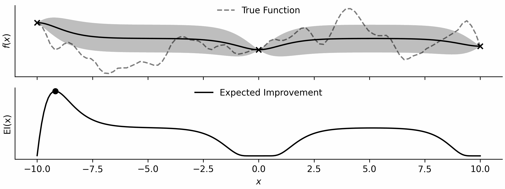
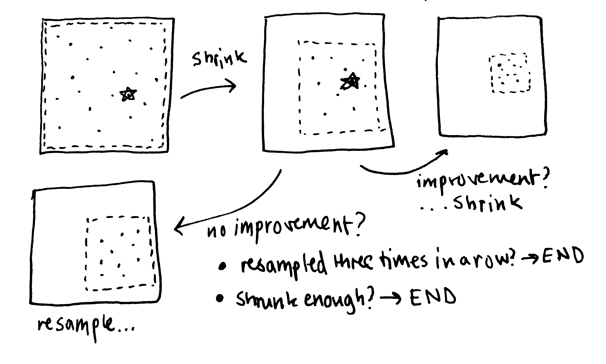

animals = [
"Lion", "Elephant", "Giraffe", "Zebra", "Penguin",
"Kangaroo", "Koala", "Panda", "Tiger", "Dolphin",
"Octopus", "Flamingo", "Cheetah", "Gorilla", "Sloth",
"Platypus", "Rhinoceros", "Crocodile", "Owl", "Chameleon",
"Toucan", "Meerkat", "Hedgehog", "Jellyfish", "Lemur"
]
descriptive_words = [
"Swarming", "Running", "Leaping", "Crawling", "Swimming",
"Flying", "Pouncing", "Slithering", "Galloping", "Diving",
"Soaring", "Burrowing", "Climbing", "Gliding", "Hopping",
"Sprinting", "Meandering", "Prowling", "Stalking", "Charging",
"Darting", "Scurrying", "Lumbering", "Prancing", "Scampering",
"Waddling", "Zigzagging", "Fluttering", "Paddling", "Swooping",
"Lunging", "Grazing", "Perching", "Hovering", "Circling",
"Nesting", "Foraging", "Hunting", "Bounding", "Swinging",
"Lounging", "Basking", "Roosting", "Migrating", "Hibernating",
"Camouflaging", "Molting", "Preening", "Frolicking", "Stampeding"
]
There is a Bayesian optimisation gold-rush, and everyone is selling shovels. Bayesian optimisation is core to the concept of self-driving labs, automated drug-discovery, and many other modern research topics. It’s well motivated, and a very useful tool. Start ups are being founded and pharmaceutical and chemicals companies are curating teams that focus fundamentally on Bayesian optimisation in one way or another. As a result, there is now a growing number of libraries, ranging from black-box APIs and no-code solutions to statistically accurate fine-grained representations; each becoming more bloated as new functionalities or usecases are appended.
With all of these options, each with their own special definition of a dataset, or a kernel, or an acquisition_function, or otherwise, it becomes difficult to see the wood for the trees. Someone in my group recently asked me if it was reasonably possible to implement Bayesian optimisation, and I more often than not get asked what library or package I use.
It is obviously important that BO tools become widely available, particularly to those that don’t know how to code, or don’t have the time such as chemists or industrial engineers. But the trade-off is that students, and practitioners are potentially using something that they don’t understand, and investors may be hoodwinked into investing in something that seems more complex than it is.
My mission in this post is to demonstrate that, whilst Bayesian optimisation entails a lot of moving parts, implementing it from scratch really shouldn’t take too long.
To make my point, I am going to code everything required for Bayesian optimisation, including visualisation… in under 100 lines of standard Python and Numpy. This will include a custom metaheuristic-based optimisation algorithm, Gaussian processes from scratch with trainable hyperparameters, an acquisition function, and an experimental design loop.
First, I’ll give myself some groundrules:
Rules
- Bayesian Optimisation that is competetive with established packages;
- Python Standard Library + Numpy only;
- Simple as possible;
- Code must be interpretable.
To begin with I’ll implement a Gaussian process from scratch.
Gaussian processes
Now I’ll need a kernel function that defines how related two points are in input space. I’ll go for the Matern 5/2. I’m not choosing it because it’s differentiable1, but rather because I think samples from the prior will look most like functions I’m interested in.
1 This is an attractive property of Gaussian processes that is ultimately distracting when optimising as a result of their nonconvexity, as I’ll cover later.
def k(x1,x2,p): # squared exponential kernel
sigma,l = p[0],p[1] # hyperparameters
d = np.sqrt(np.dot(x1-x2,x1-x2))
return sigma**2 * (1 + np.sqrt(5)*d/l + 5*d**2/(3*l**2)) * np.exp(-np.sqrt(5)*d/l)Simple enough. Forget the hyperparameters now, I’ll cover those later. Now, I’ll give myself the ability to calculate a covariance matrix. I only need to calculate the kernel function for the upper triangular, then symmetrically set the corresponding lower triangular value to be the same2, saving me some time.
2 Because all valid covariance matrices are positive semi-definite.
def cm(x,p): # covariance matrix
n = x.shape[0]; K = np.zeros((n,n))
for i in range(n):
for j in range(i,n): # symmetric
K[i,j] = K[j,i] = k(x[i],x[j],p)
return K + 1e-6*np.ones(n)I’ve added some jitter to the diagonal just to help out when inverting the matrix in a bit. This is relatively common across all Gaussian process libraries. The final GP utility I’ll require is the negative log-likelihood, which will be used to assess hyperparameter performance.
def nll(p, x, y): # negative log likelihood
K = cm(x, p) # calculate covariance matrix
return -0.5 * (np.log(la.det(K)) + (y - p[2]).T @ la.solve(K, y - p[2]) + len(x) * np.log(2 * np.pi))Now everything needed has been defined, I’ll create my Gaussian process class. I will simplify the training procedure by making it train on instanciation. The only other thing that is needed is the ability to call it, returning the mean and variance of the posterior distribution at x.
class GP: # Gaussian process class
def __init__(self,x,y):
self.x = x; self.y = y
# optimize hyperparameters (sigma, l, constant mean)
self.p = tiny_opt(partial(nll, x=x, y=y), np.array([[0.1,10.0],[0.1,10.0],[np.min(y),np.max(y)]]))
self.K_inv = la.inv(cm(x,self.p)) # precompute inverse covariance matrix
def __call__(self,x):
k_row = np.array([[k(x,xi,self.p) for xi in self.x]]) # compute row of covariance matrix
dot_prod = np.dot(k_row,self.K_inv) # precompute dot product
return self.p[2] + dot_prod.dot(self.y-self.p[2]).item(), \
k(x,x,self.p) - np.dot(dot_prod,k_row.T).item()It is defined by data x and y (both row-wise Numpy arrays). I have a mysterious function called tiny_opt which for now provides us with optimal hyperparameters with respect to the negative log-likelihood. This ‘training’ step, and the precompution of the inverse of the covariance matrix3 defines a ‘trained’ Gaussian process. I’ve never really liked that terminology, borrowed from neural network training4. One of these parameters is a constant that defines my mean function. As a result of this, combined with the kernel lengthscale parameter, there is now no need to deal with data normalisation. I’ve previously covered noisy Bayesian optimisation, but as I won’t be dealing with noisy observations here, my GP is noiseless.
3 Resulting in the precision matrix.
4 Though when creating sparse Gaussian processes, the specification of hyperparameters does look more akin to training neural network parameters.
Next up, I’ll outline what is actually happening in my tiny_opt function. This will also eventually be used to optimise my acquisition function as well so it’s worth getting right.
Metaheuristic Optimisation
As I previously mentioned, I see the ability to easily calculate the gradient of a Gaussian process largely as a distraction. I am relatively confident that most people who have any significant experience optimising Gaussian processes will agree. In addition, BO can potentially be made unusually inefficient when using a gradient-based optimiser due to flat regions within an acqusition function, leading to functions such as logEI being proposed.
Gaussian processes, or resulting functions that apply them5 are generally nonconvex. Whilst local minima can be overcome, it’s clear that even in one dimension, there are often as many local optima as data points.
5 Such as acquisition/utility functions (spoiler).
Gaussian processes are practically free to evaluate in the grand scheme of experimental design, and most practical problems are interval-constrained. Combined with the fact that they can of course be evaluted in parallel, motivates the use of evaluation hungry but effective metaheuristics.
I myself have found them very effective in optimising acqusition functions, and was pleased to see Google’s internal GP optimisation algorithm taking a similar view when they recently released details.
My algorithm is self-documented but I will describe it below. I’ve found it to be simple and effective. I wouldn’t even describe it as a metaheuristic. Actually, I will.
Every time you refresh this page my algorithm will be named after a different completely arbitrary animal!
Introducing the…
Algorithm!
def tiny_opt(f,b): # small metaheuristic optimization
c = np.mean(b, axis=1); b_og = b.copy()
b_f = -np.inf; count = 0; w = 1 # track best solution, count stagnation, and shrink factor
while True:
for i in range(len(b)): # shrink search space around current centre by w
r = (b[i,1] - b[i,0]) * w
b[i] = [c[i] - r / 2, c[i] + r / 2]
# generate random solutions within search space
x = np.clip(ra.rand(1000,len(b))*(b[:,1]-b[:,0])+b[:,0], b_og[:,0], b_og[:,1])
with Pool() as pool: # evaluate solutions in parallel
y = pool.map(f, x)
sol = x[np.argmax(y)] # best solution
if f(sol) > b_f: # if improvement, update best solution
b_f = f(sol); c = sol; count = 0; w = 0.75 # shrink search space next time
else: # if no improvement, don't shrink search space next time (set w = 1)
count += 1; w = 1 # increment stagnation counter
if (b_og[0,1]-b_og[0,0])/(b[0,0]-b[0,1]) < 0.25 or count == 3:
# if search space has shrunk below a threshold or not shrunk for 3 iterations
return c # return best solution!Simply, I sample solutions within the bounds and evaluate them in parallel. If I sample the best overall solution I store this, and shrink the bounds around this point. I then re-sample and repeat. If I don’t find a better solution I don’t shrink the bounds. If I don’t find a better solution for three iterations I terminate. I also terminate if the bounds shrink below a certain threshold. These two properties ensure that the algorithm terminates eventually6. It is effectively a global trust-region method.
6 Empirically
Here’s a little visualisation that I’ve drawn.

With the ability to optimise functions, all I need is an acquisition function, which is simple enough… and a loop!
This is just the expected improvement of a Gaussian process, implemented by importing NormalDist from the statistics standard library.
def ei(gp,x): # expected improvement
mu, var = gp(x); N = NormalDist()
z = (mu - np.max(gp.y)) / np.sqrt(var)
return np.sqrt(var) * (z * N.cdf(z) + N.pdf(z))And here is my loop…
bounds = np.array([[-10.0,10.0]])
while True:
gp = GP(x, y) # build GP
x_opt = tiny_opt(partial(ei,gp),bounds); y_opt = ei(gp,x_opt) # optimise aq
x = np.vstack([x,x_opt]) # update x
y = np.vstack([y,np.array([f(x_opt[0])])]) # evaluate and update y… that’s it!
But to really prove that this works, I’m going to even choose an interesting test function to use, and implement the ability to visualise 1D functions7.
7 Note that all of the above works for any dimensional function.
Plotting
To plot my package to see it it is working, I’ll need a test function. One of my personal favourite ways of doing this is to sample one from a GP prior:
x_gp = np.linspace(bounds[0,0],bounds[0,1],100).reshape(-1, 1)
K = cm(x_gp, [1.0,1.0,0.0])
y_gp = ra.multivariate_normal(np.zeros(len(x_gp)), K).reshape(-1, 1)
f_gp = GP(x_gp,y_gp); f = lambda x: f_gp(x)[0] # this now acts as my 'true' functionAn easy way of doing this is by drawing from a multivariate distribution with given covariance matrix and training a GP using this data. This provides a continuous, callable random function without dealing with things like pseudorandom number generation.
I’ve written before about plotting practices (here and here), so I won’t go into too much detail. Here is the code that evaluates the GP and acqusition function and plots them both.
In addition, I save each plot and produce a GIF at the end.
x = np.linspace(bounds[0,0],bounds[0,1],3).reshape(-1, 1) # initial training data
y = np.array([f(xi) for xi in x]).reshape(-1, 1) # initial training data
x_test = np.array([xi for xi in np.linspace(bounds[0,0],bounds[0,1],200)]).reshape(-1, 1) # test data
images = []
for _ in range(16):
gp = GP(x, y) # create GP
x_opt = tiny_opt(partial(ei,gp),bounds); y_opt = ei(gp,x_opt)
mu, var = np.array([gp(xi) for xi in x_test]).T; std = np.sqrt(var)
fig,ax = plt.subplots(2,1,figsize=(8,3),sharex=True,constrained_layout=True)
ax[1].set_xlabel('$x$'); ax[0].set_ylabel('$f(x)$'); ax[1].set_ylabel('EI(x)')
ax[0].scatter(x,y,c='k',marker='x')
ax[0].plot(x_test, mu,c='k'); ax[0].plot(x_gp, y_gp,c='k',ls='--',alpha=0.5,label='True Function')
ax[0].fill_between(x_test.flatten(), mu-std, mu+std, alpha=0.25,lw=0,color='k')
ax[1].plot(x_test, [ei(gp,xi) for xi in x_test],c='k',label='Expected Improvement')
ax[1].scatter(x_opt,y_opt,c='k',marker='o')
for a in ax:
a.spines['top'].set_visible(False); a.spines['right'].set_visible(False)
a.set_yticks([])
a.legend(loc='upper center',bbox_to_anchor=(0.5,1.1),frameon=False,ncol=1)
filename = f'{_:03d}.png'
plt.savefig(filename,dpi=300); plt.close()
images.append(Image.open(filename))
x = np.vstack([x,x_opt]) # update x
y = np.vstack([y,np.array([f(x_opt[0])])]) # evaluate and update y
images[0].save('bo.gif',save_all=True,append_images=images[1:],duration=500,loop=0)The full code is here, approximately 20% of the lines are for plotting!
Click to view all code.
import numpy as np; import numpy.linalg as la; import numpy.random as ra
from multiprocessing import Pool; from statistics import NormalDist
from functools import partial; import matplotlib.pyplot as plt; from PIL import Image
def k(x1,x2,p): # squared exponential kernel
sigma,l = p[0],p[1] # hyperparameters
d = np.sqrt(np.dot(x1-x2,x1-x2))
return sigma**2 * (1 + np.sqrt(5)*d/l + 5*d**2/(3*l**2)) * np.exp(-np.sqrt(5)*d/l)
def cm(x,p): # covariance matrix
n = x.shape[0]; K = np.zeros((n,n))
for i in range(n):
for j in range(i,n): # symmetric
K[i,j] = K[j,i] = k(x[i],x[j],p)
return K + 1e-3*np.eye(n)
def nll(p, x, y): # negative log likelihood
K = cm(x, p) # calculate covariance matrix
return -0.5 * (np.log(la.det(K)+1e-6) + (y - p[2]).T @ la.solve(K, y - p[2]) + len(x) * np.log(2 * np.pi))
def tiny_opt(f,b): # small metaheuristic optimization
c = np.mean(b, axis=1); b_og = b.copy()
b_f = -np.inf; count = 0; w = 1 # track best solution, count stagnation, and shrink factor
while True:
for i in range(len(b)): # shrink search space around current centre by w
r = (b[i,1] - b[i,0]) * w
b[i] = [c[i] - r / 2, c[i] + r / 2]
# generate random solutions within search space
x = np.clip(ra.rand(10,len(b))*(b[:,1]-b[:,0])+b[:,0], b_og[:,0], b_og[:,1])
with Pool() as pool: # evaluate solutions in parallel
y = pool.map(f, x)
sol = x[np.argmax(y)] # best solution
if f(sol) > b_f: # if improvement, update best solution
b_f = f(sol); c = sol; count = 0; w = 0.75 # shrink search space next time
else: # if no improvement, don't shrink search space next time (set w = 1)
count += 1; w = 1 # increment stagnation counter
if (b_og[0,1]-b_og[0,0])/(b[0,0]-b[0,1]) < 0.25 or count == 3:
print('Optimised!')
# if search space has shrunk below a threshold or not shrunk for 3 iterations
return c # return best solution!
def ei(gp,x): # expected improvement
mu, var = gp(x); N = NormalDist()
z = (mu - np.max(gp.y)) / np.sqrt(var)
return np.sqrt(var) * (z * N.cdf(z) + N.pdf(z))
class GP: # Gaussian process class
def __init__(self,x,y):
self.x = x; self.y = y
# optimize hyperparameters (sigma, l, constant mean)
self.p = tiny_opt(partial(nll, x=x, y=y), np.array([[0.1,10.0],[0.1,10.0],[np.min(y),np.max(y)]]))
self.K_inv = la.inv(cm(x,self.p)) # precompute inverse covariance matrix
def __call__(self,x):
k_row = np.array([[k(x,xi,self.p) for xi in self.x]]) # compute row of covariance matrix
dot_prod = np.dot(k_row,self.K_inv) # precompute dot product
return self.p[2] + dot_prod.dot(self.y-self.p[2]).item(), \
k(x,x,self.p) - np.dot(dot_prod,k_row.T).item()
if __name__ == '__main__':
bounds = np.array([[-10.0,10.0]])
# sampling from prior of a GP to define test function
x_gp = np.linspace(bounds[0,0],bounds[0,1],100).reshape(-1, 1)
K = cm(x_gp, [1.0,1.0,0.0])
y_gp = ra.multivariate_normal(np.zeros(len(x_gp)), K).reshape(-1, 1)
f_gp = GP(x_gp,y_gp); f = lambda x: f_gp(x)[0] # this now acts as my 'true' function
x = np.linspace(bounds[0,0],bounds[0,1],3).reshape(-1, 1) # initial training data
y = np.array([f(xi) for xi in x]).reshape(-1, 1) # initial training data
x_test = np.array([xi for xi in np.linspace(bounds[0,0],bounds[0,1],200)]).reshape(-1, 1) # test data
images = []
for _ in range(16):
gp = GP(x, y) # create GP
x_opt = tiny_opt(partial(ei,gp),bounds); y_opt = ei(gp,x_opt)
mu, var = np.array([gp(xi) for xi in x_test]).T; std = np.sqrt(var)
fig,ax = plt.subplots(2,1,figsize=(8,3),sharex=True,constrained_layout=True)
ax[1].set_xlabel('$x$'); ax[0].set_ylabel('$f(x)$'); ax[1].set_ylabel('EI(x)')
ax[0].scatter(x,y,c='k',marker='x')
ax[0].plot(x_test, mu,c='k'); ax[0].plot(x_gp, y_gp,c='k',ls='--',alpha=0.5,label='True Function')
ax[0].fill_between(x_test.flatten(), mu-std, mu+std, alpha=0.25,lw=0,color='k')
ax[1].plot(x_test, [ei(gp,xi) for xi in x_test],c='k',label='Expected Improvement')
ax[1].scatter(x_opt,y_opt,c='k',marker='o')
for a in ax:
a.spines['top'].set_visible(False); a.spines['right'].set_visible(False)
a.set_yticks([])
a.legend(loc='upper center',bbox_to_anchor=(0.5,1.1),frameon=False,ncol=1)
filename = f'{_:03d}.png'
plt.savefig(filename,dpi=300); plt.close()
images.append(Image.open(filename))
x = np.vstack([x,x_opt]) # update x
y = np.vstack([y,np.array([f(x_opt[0])])]) # evaluate and update y
images[0].save('bo.gif',save_all=True,append_images=images[1:],duration=500,loop=0)97 lines, not bad!
Lessons
These things are, on the surface not that complicated. That is what makes BO as a tool so powerful. There are always a host of interesting domain-specific problems to be solved, but by demystifying BO as a whole it becomes easier to make these adjustments or developments.
I personally think that BO software has become overly cumbersome, but there are many moving parts, and it never quite turns out to be the one-size-fits all solution it is billed as. I don’t think there’s a long term solution or fix to this at the moment, I would only say to try it for yourself!